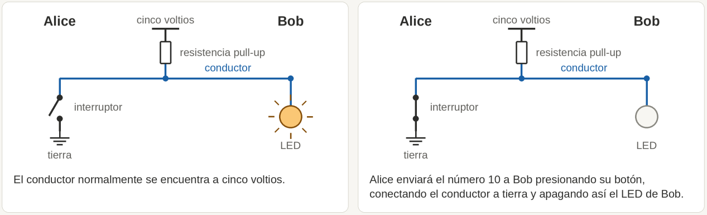
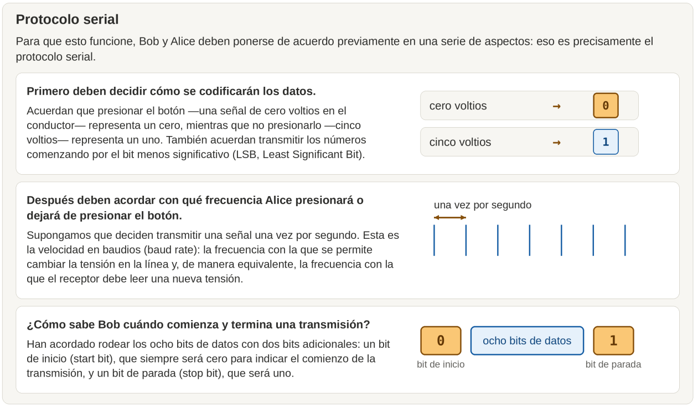
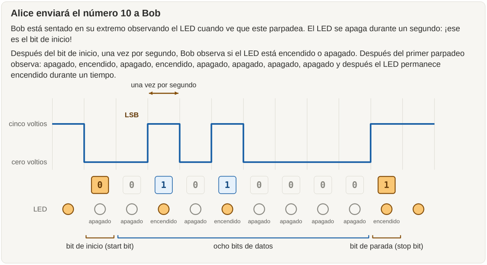
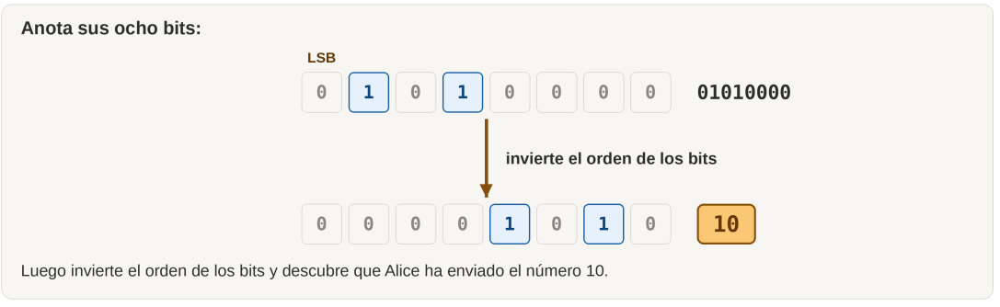
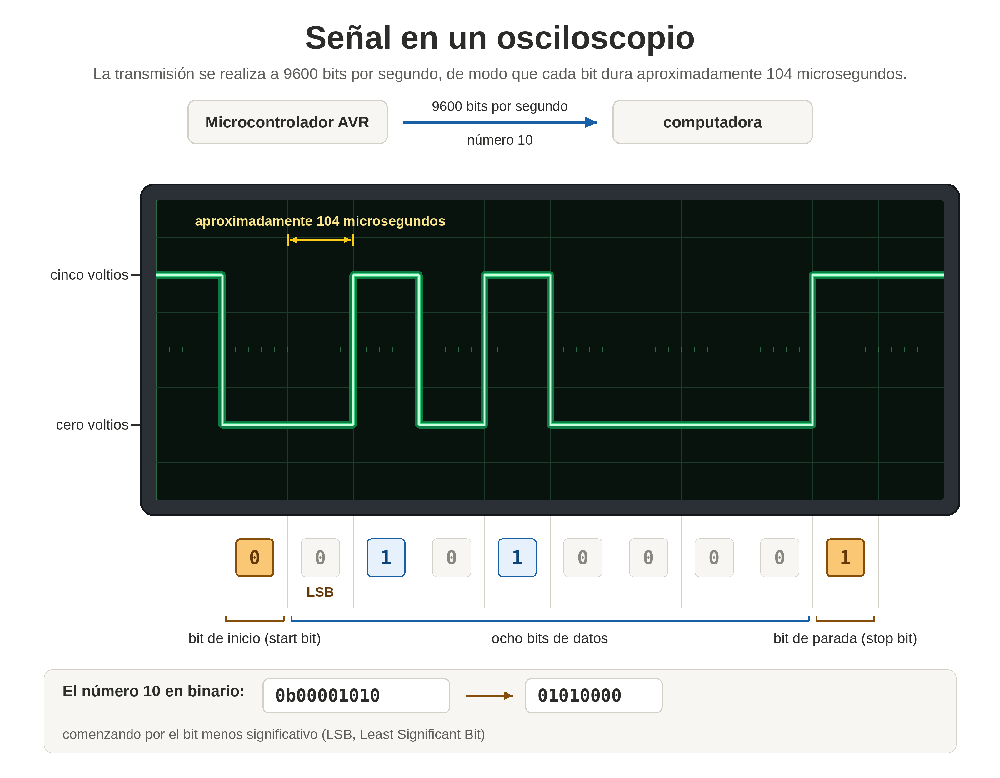
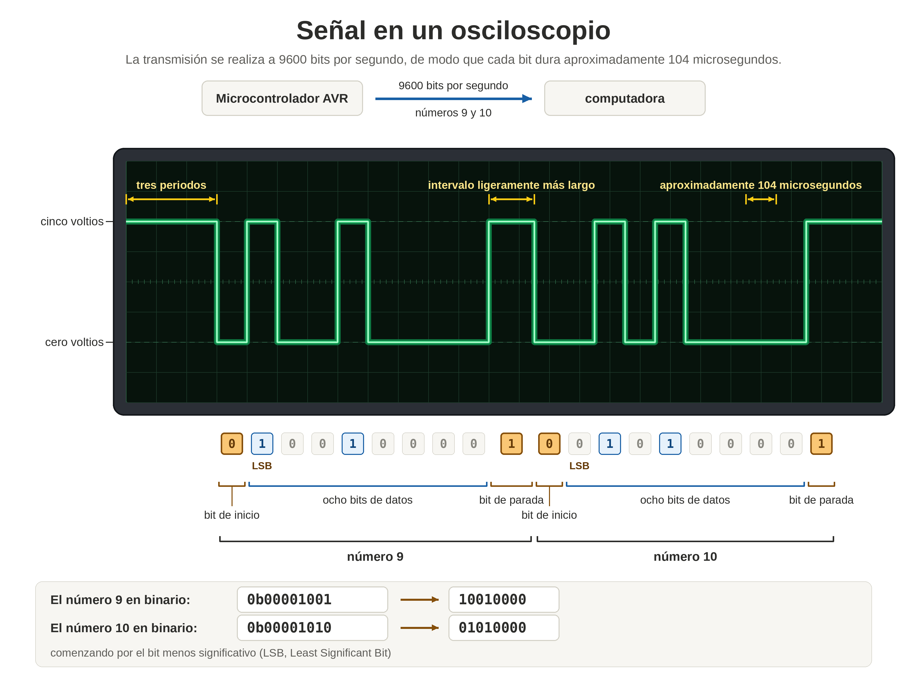

COMUNICACIÓN SERIAL ASÍNCRONA - UART
1. INTRODUCCIÓN
Existen diferentes formas de transmitir información en serie. En este capítulo nos centraremos en una de las más utilizadas en sistemas embebidos: la comunicación serial asíncrona mediante UART (Universal Asynchronous Receiver and Transmitter), es decir, Receptor y Transmisor Asíncrono Universal.
UART permite transmitir y recibir datos mediante líneas de comunicación digital sin necesidad de compartir una señal de reloj entre los dispositivos. Para que la comunicación funcione, ambos extremos deben utilizar una configuración compatible, especialmente en lo referente a la velocidad de transmisión y al formato de los datos.
Para comprender cómo funciona este mecanismo, imaginemos a dos personas que quieren comunicarse enviando señales eléctricas a través de un conductor.
2. REPRESENTACIÓN DE LOS DATOS MEDIANTE SEÑALES ELÉCTRICAS
2.1. Un ejemplo sencillo: Alice y Bob
Supongamos que Alice quiere enviarle el número 10 a su amigo Bob utilizando un conductor eléctrico.
Para concretar el ejemplo, imaginemos que el conductor dispone de una resistencia de elevación pull-up, conectada a una alimentación de 5 V. Por tanto, cuando nadie fuerza la línea a un nivel bajo, esta permanece normalmente a unos 5 V.
En el extremo de Alice hay un interruptor conectado a tierra. Cuando Alice lo presiona, conecta el conductor a 0 V. En el extremo de Bob hay un LED que le permite observar el estado eléctrico de la línea.
En este montaje, al presionar el interruptor, la línea pasa a nivel bajo y el LED se apaga. Cuando Alice suelta el interruptor, la resistencia pull-up devuelve la línea al nivel alto y el LED se enciende.
De esta manera, Alice puede transmitir información modificando el estado eléctrico del conductor y Bob puede interpretarla observando el LED.

2.2. Por qué se utiliza el sistema binario
Alice podría enviar el número 10 haciendo parpadear el LED diez veces. Sin embargo, este procedimiento se volvería poco práctico al transmitir números mayores, como 253 o 64 123.
Una alternativa mucho más eficiente consiste en representar los números mediante el sistema binario, en el que cada dígito puede tomar únicamente dos valores: 0 o 1.
El número decimal 10 se representa en binario mediante ocho bits de la siguiente manera:
0b00001010
El prefijo 0b indica que el valor está escrito en
binario. Los ocho bits restantes constituyen el dato que Alice
quiere transmitir.
Para enviar esta secuencia, Alice debe generar un patrón de niveles eléctricos que represente cada uno de los bits. Bob tendrá que observar esos niveles y reconstruir el valor original.
2.3. La necesidad de establecer un protocolo
Para que la transmisión funcione, Alice y Bob deben ponerse de acuerdo previamente sobre cómo interpretar las señales. Ese conjunto de reglas es precisamente el protocolo de comunicación serial.
Como mínimo, deben establecer
- La correspondencia entre los niveles eléctricos y los bits.
- El orden de transmisión de los bits.
- La velocidad de comunicación
- La forma de identificar el comienzo y el final de cada trama.
3. REGLAS BÁSICAS DEL PROTOCOLO UART
3.1. Correspondencia entre niveles eléctricos y bits
Alice y Bob acuerdan que una tensión de 0 V representa un cero lógico y que una tensión de 5 V representa un uno lógico.
Esta correspondencia es válida para el ejemplo didáctico. En un sistema real, los niveles de tensión que representan un cero y un uno dependen de las características eléctricas de los dispositivos utilizados.
También acuerdan transmitir primero el bit menos significativo (LSB, Least Significant Bit). Esto significa que el bit de menor peso se transmite antes que los bits de mayor peso.
Para el número 10, cuyo valor binario de ocho bits es
00001010, el orden de transmisión será:
Orden de bits transmitidos: 0 1 0 1 0 0 0 0
Peso de los bits: LSB MSBPor tanto, aunque el número se escribe habitualmente con el bit más significativo a la izquierda, UART transmite primero el bit menos significativo. El receptor debe tener en cuenta este orden para reconstruir correctamente el dato.
3.2. Velocidad de transmisión y duración de los bits
Alice y Bob también deben acordar la velocidad con la que se transmitirán los bits. Supongamos que deciden enviar un bit por segundo.
En este ejemplo, cada bit ocupa un intervalo de un segundo. La duración de cada intervalo debe ser conocida por el receptor para que pueda muestrear la señal en los instantes adecuados.
En UART se utiliza habitualmente el término velocidad en baudios (baud rate) para especificar la velocidad de señalización. En una comunicación UART convencional, cada símbolo representa un bit, por lo que el valor numérico de la velocidad en baudios coincide con la tasa de bits por segundo.
Por ejemplo, a 9600 baudios, cada intervalo de bit dura aproximadamente:
Tbit = 1 / 9600 ≈ 104,17 µsEl receptor utiliza esta duración para determinar cuándo debe leer el nivel de la línea y decidir si el bit recibido es un cero o un uno.
3.3. Identificación del comienzo y el final de una trama
Una pregunta importante es cómo sabe Bob cuándo comienza una transmisión y cuándo termina.
Para resolverlo, Alice y Bob acuerdan rodear los ocho bits de datos con dos bits adicionales: un bit de inicio (start bit) y un bit de parada (stop bit).
- Bit de inicio: siempre tiene valor lógico 0 e indica el comienzo de la trama.
- Bits de datos: contienen la información que se desea transmitir. En este ejemplo son ocho.
- Bit de parada: tiene valor lógico 1 e indica el final de la trama y devuelve la línea al estado de reposo.
En una configuración UART habitual, la línea permanece en nivel alto cuando está en reposo. La transición desde el nivel alto al nivel bajo permite detectar el bit de inicio y comenzar la temporización de recepción.
La trama del ejemplo contiene diez intervalos de bit: uno de inicio, ocho de datos y uno de parada.
Reposo | Inicio | D0 D1 D2 D3 D4 D5 D6 D7 | Parada
1 | 0 | 0 1 0 1 0 0 0 0 | 1
4. RECEPCIÓN Y RECONSTRUCCIÓN DEL DATO
4.1. Detección del bit de inicio
Bob permanece en su extremo del conductor observando el LED. Cuando el LED se apaga, identifica el nivel bajo correspondiente al bit de inicio.
En una implementación real de UART, el receptor no depende de una persona que observe un LED. El periférico detecta eléctricamente el inicio de la trama y utiliza su propia temporización para muestrear los bits siguientes.
4.2. Lectura de los ocho bits de datos
Después de detectar el bit de inicio, Bob observa el estado de la línea una vez por segundo, según la velocidad acordada. En el ejemplo, registra la siguiente secuencia de estados del LED durante los ocho bits de datos:
apagado, encendido, apagado, encendido, apagado, apagado, apagado, apagadoDe acuerdo con las reglas establecidas, un LED apagado representa un cero y un LED encendido representa un uno. La secuencia observada es, por tanto:
01010000
Esta secuencia corresponde al orden en que se transmitieron los bits, comenzando por el menos significativo. Para interpretar el número en la forma binaria habitual, Bob invierte el orden de los bits:
Bits recibidos en orden de transmisión: 01010000
Representación binaria convencional: 00001010
Valor decimal: 10Así, Bob recupera correctamente el número 10 enviado por Alice.

4.3. Interpretación de una señal real de osciloscopio
La Figura siguiente muestra un ejemplo real de un microcontrolador AVR que transmite el número 10 a una computadora. En lugar de utilizar un bit por segundo, la transmisión se realiza a 9600 bits por segundo, de modo que cada bit dura aproximadamente 104 microsegundos.
Aunque la señal es mucho más rápida que la del ejemplo didáctico, todavía es posible reconocer el patrón transmitido. La secuencia de niveles mostrada es:
1111100101000011111Para interpretar la señal, hay que tener presente que los niveles altos anteriores al inicio y posteriores a la trama pueden corresponder al estado de reposo de la línea.
- Identificar la transición al nivel bajo que marca el bit de inicio.
- Contar los ocho bits de datos en el orden de transmisión.
- Comprobar que el bit de parada se encuentra en nivel alto.
- Invertir el orden de los ocho bits para escribir el valor binario convencional.
- Convertir el valor binario a decimal, si es necesario.

Este procedimiento permite relacionar la forma de onda observada en un osciloscopio con la información digital que transmite el microcontrolador.
4.4. Envío consecutivo de varios bytes
La figura Envío serial de los números 9 y 10 muestra la señal correspondiente a la transmisión consecutiva de dos bytes: primero el número 9 y después el número 10.
Observa que el bit de parada situado entre ambos datos permanece en nivel alto durante un intervalo ligeramente más largo. Esto puede ocurrir porque el microcontrolador AVR está realizando otras tareas y tarda unos microsegundos adicionales en comenzar la siguiente transmisión.
Esta pausa no supone necesariamente un problema para el receptor. El bit de parada mantiene la línea en estado alto y el receptor espera hasta detectar el siguiente bit de inicio para comenzar la temporización de una nueva trama.
Por tanto, dos bytes consecutivos no tienen que transmitirse necesariamente sin ninguna pausa entre ellos. Lo importante es que cada nueva trama comience con un bit de inicio válido y que se respeten las condiciones temporales del protocolo.
Figura. Envío serial de los números 9 y 10.

Si se desea practicar, se puede intentar identificar directamente en la traza del osciloscopio el bit de inicio, los ocho bits de datos y el bit de parada de cada trama. Después, basta con reconstruir los valores binarios teniendo en cuenta que el bit menos significativo se transmite primero.
5. COMUNICACIÓN EN AMBOS SENTIDOS
5.1. Incorporación de un segundo conductor
Si Bob quiere responder a Alice, la solución más sencilla consiste en repetir la misma configuración física y el mismo protocolo, pero en sentido inverso: colocar un interruptor en el extremo de Bob y un LED en el de Alice.
De esta manera, cada persona dispone de una línea para enviar información a la otra. En un sistema UART convencional se utilizan dos líneas de señal:
- TX (Transmit): salida por la que un dispositivo transmite los datos.
- RX (Receive): entrada por la que un dispositivo recibe los datos.
Para conectar dos dispositivos UART, normalmente se conecta TX de un dispositivo con RX del otro y TX del segundo con RX del primero. Además, ambos deben compartir una referencia eléctrica común, generalmente mediante la conexión de GND, y sus niveles eléctricos deben ser compatibles.
Esta disposición permite que Alice y Bob envíen datos en ambos sentidos. Si las dos líneas funcionan simultáneamente, la comunicación puede ser bidireccional simultánea (full-duplex).
6. EL PERIFÉRICO USART EN LOS MICROCONTROLADORES AVR
6.1. Por qué se necesita hardware especializado
Codificar y decodificar los datos mediante software puede resultar laborioso. Además, generar los pulsos eléctricos con una temporización precisa y recibirlos correctamente a velocidades de miles o decenas de miles de bits por segundo exige controlar cuidadosamente los intervalos de tiempo.
Si el procesador tuviera que realizar todas estas operaciones mediante instrucciones ordinarias, tendría que dedicar una parte importante de su tiempo a generar y comprobar cada bit.
Por esta razón, numerosos microcontroladores AVR incorporan un periférico de hardware especializado que se encarga de realizar automáticamente las operaciones básicas de transmisión y recepción serial.
6.2. USART: transmisor y receptor universal
Muchos microcontroladores AVR de la familia Mega disponen de uno o varios periféricos denominados USART (Universal Synchronous and Asynchronous Receiver and Transmitter), es decir, receptor y transmisor síncrono y asíncrono universal.
Como indica su nombre, USART admite comunicación asíncrona y, en los dispositivos que implementan esa función, comunicación síncrona. UART, en cambio, se refiere específicamente al funcionamiento asíncrono.
El periférico USART puede encargarse de tareas como:
- Generar la secuencia de bits de una trama de transmisión.
- Detectar el inicio de una trama recibida.
- Muestrear la señal y reconstruir los bits de datos.
- Gestionar los bits de inicio y parada.
- Indicar cuándo un dato está disponible para ser leído o cuándo se ha completado una transmisión.
De este modo, el programa puede escribir un dato en el registro de transmisión y dejar que el periférico genere la secuencia eléctrica correspondiente. Del mismo modo, cuando se recibe un dato, el programa puede leerlo desde el registro de recepción.
La configuración concreta de los registros, la selección de la velocidad de transmisión y las funciones disponibles dependen del modelo de AVR utilizado. Por ello, antes de programar el periférico, es necesario consultar la hoja de datos del microcontrolador correspondiente.